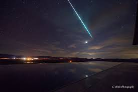

Meteors

What’s that flash of light streaking across the sky? We call
the objects that creates this brilliant effect by different names, depending
on where it is.
Meteoroids are what we call “space rocks” that range in size from dust grains to
small asteroids. This term only applies when they’re in space
Most are pieces of other, larger bodies that have been broken or blasted off.
Some come from comets, others from asteroids, and some even come from the Moon
and other planets. Some meteoroids are rocky, while others are metallic, or
combinations of rock and metal.
When meteoroids enter Earth’s atmosphere, or that of another planet, like Mars,
at high speed and burn up, they’re called meteors. This is also when we refer
to them as “shooting stars.” Sometimes meteors can even appear brighter than
Venus -- that’s when we call them “fireballs.” Scientists estimate that about
48.5 tons (44,000 kilograms) of meteoritic material falls on Earth each day.
When a meteoroid survives its trip through the atmosphere and hits the ground,
it’s called a meteorite.